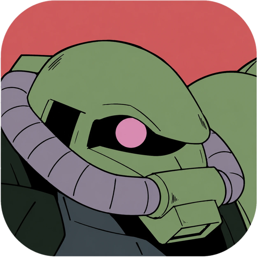

G
U
N
D
A
N
E
O
ES
EN
0 / 50
Nuevo mazo
Ver mis mazos
Mi colección
Competición
Filtros
Set
Color
Tipo
Habilidad
Efecto
Rasgos
Descenso a la locura en forma de robotis
Añadir mazo
Ver mis mazos
Nombre del mazo
Crear mazo
Mazo en construcción
0
/50
Comparar
Buscar carta
Añadir filtro
Cargando…
Limpiar filtros
Catálogo
Filtros
Nuevo
Mazos
Colección
Catálogo
Mis mazos
Añadir cartas
Copiar lista
Comparar
Eliminar mazo
Volver
0 / 50
Comparar
Volver
Meta Lab
Catálogo
Competición
Qué se está jugando y funcionando ahora mismo.
Catálogo
Mi colección
Ordenar por
Filtros
Añadir cartas
Comparativa de mazos
![Gundam Card Game]()